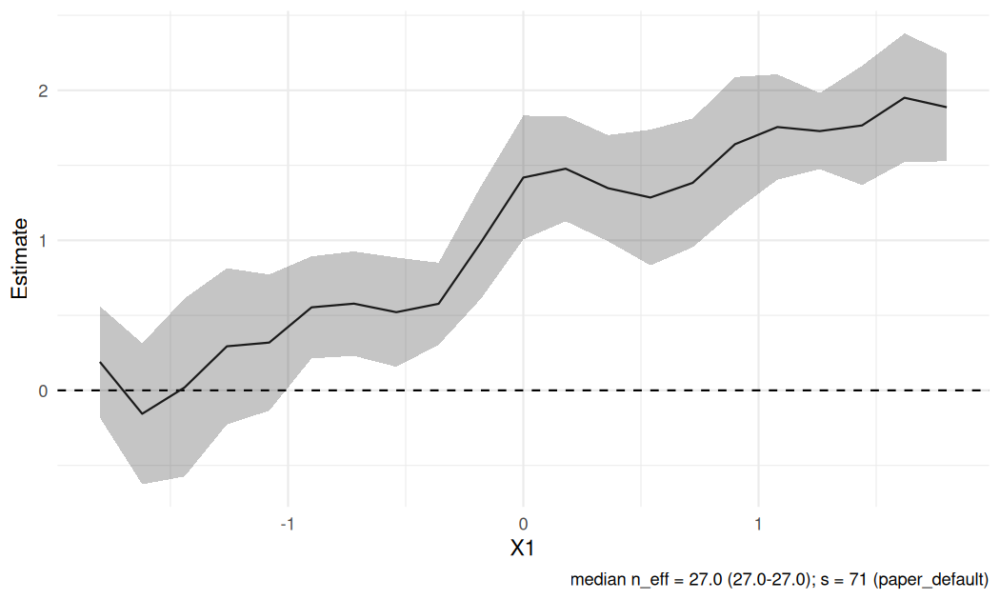

Version 0.1.4. See NEWS for changes.
RdistNN estimates conditional treatment effects and regression functions using distributional nearest-neighbor (DNN) weights. Choose covariate profiles, fit local estimates, and inspect jackknife standard errors, local support and tuning sensitivity. For causal estimation, you supply nuisance predictions; the package constructs the adjusted signals and performs local estimation.
Get started · Function reference · Stata companion
Installation
install.packages("pak") # once
pak::pak("JakobJuergens/RdistNN")This installs production master. R 4.1.0 or newer, Rcpp and a C++17 compiler are required: Rtools on Windows, Xcode command line tools on macOS, or an R-compatible compiler on Linux. For plots, also install ggplot2; dashboards can use patchwork.
For the version-pinned release, use pak::pak("JakobJuergens/RdistNN@v0.1.4").
For reproducible installation, retain the full source commit or checked archive identity; RELEASING.md explains candidate installation and historical pins. The historical v0.1.0 tag predates CLATE and the current shared reporting interface. Retain the source commit or archive identity alongside your results.
Choose a workflow
| Goal | Function | Main inputs |
|---|---|---|
| Conditional average treatment effects | cate_dnn() |
Outcome, treatment and supplied outcome/propensity predictions, or a supplied pseudo-outcome |
| Conditional mean regression | np_dnn() |
Outcome and covariates |
| Conditional effects among compliers | clate_dnn() |
Outcome, binary treatment/instrument and instrument-arm nuisance predictions |
| Ratio of two local means | affine_ratio_dnn() |
Two aligned signals |
| Two-scale regression | np_tdnn() |
Outcome and two localization orders |
| Reusable DNN weights | weights_matrix() |
Covariates and target profiles |
The estimators accept numeric matrices/vectors or data frames, including tibbles. Select localization columns with x_cols; use x0 for one profile or X0 for a matrix with one profile per row.
A first CATE fit
This simulated example uses oracle nuisance values. In an application, replace them with aligned predictions of the control outcome mean, treated outcome mean and treatment propensity. RdistNN does not fit those models.
library(RdistNN)
demo <- cate_demo_data(n = 180, p = 2, design = "hetero", seed = 1)
d <- demo$data
profiles <- cbind(X1 = seq(-0.5, 0.5, length.out = 5), X2 = 0)
fit_cate <- cate_dnn(
data = d, x_cols = c("X1", "X2"),
y_col = "Y", t_col = "D",
m0_col = "m0_oracle", m1_col = "m1_oracle", e_col = "e_oracle",
X0 = profiles, k = 1L, return = c("W", "dx", "nuisance")
)
summary(fit_cate)$coefficients
#> estimate std.error statistic p.value conf.low conf.high
#> target_1 0.1661760 0.2237942 0.7425393 4.577606e-01 -0.27245262 0.6048047
#> target_2 0.2282292 0.3240950 0.7042047 4.813053e-01 -0.40698531 0.8634437
#> target_3 0.4527139 0.2606611 1.7367908 8.242410e-02 -0.05817257 0.9636003
#> target_4 0.8600529 0.1748240 4.9195372 8.674907e-07 0.51740429 1.2027016
#> target_5 1.2093925 0.1633303 7.4045833 1.315629e-13 0.88927104 1.5295139Each row reports the effect at one profile, its standard error and pointwise confidence bounds. Inspect local support before interpreting a profile:
as.data.frame(diagnostics(fit_cate))[, c("target_id", "n_eff", "treated_mass", "control_mass")]
#> target_id n_eff treated_mass control_mass
#> target_1 target_1 17.52493 0.4771771 0.5228229
#> target_2 target_2 17.52493 0.5726329 0.4273671
#> target_3 target_3 17.52493 0.7317029 0.2682971
#> target_4 target_4 17.52493 0.7015676 0.2984324
#> target_5 target_5 17.52493 0.6204591 0.3795409With ggplot2 installed, the same fit gives a profile plot:
plot(fit_cate)
The getting-started guide shows matrix inputs, supplied signals and covariance between prespecified profiles. Earlier m_col calls should use both arm means for AIPW or a supplied pseudo_outcome; a pooled outcome mean is not a substitute. The migration guide describes the current signal inputs and refitting older development objects. Fits report meta$signal_source and retain their original meta$created_with_version; these describe the fit rather than certify its inference assumptions.
Regression and conditional LATE
For a conditional mean, reuse the same covariates and targets without nuisance inputs:
fit_np <- np_dnn(data = d, x_cols = c("X1", "X2"), y_col = "Y", X0 = profiles)
data.frame(estimate = coef(fit_np))
#> estimate
#> target_1 0.8244906
#> target_2 1.2066100
#> target_3 1.4750873
#> target_4 1.7033563
#> target_5 1.8859881Use clate_dnn() for conditional LATE with a binary instrument and treatment. Supply the instrument propensity and the outcome/treatment means in each instrument arm. The CLATE guide provides a complete example and explains the first-stage and status outputs. Inspect the first stage alongside the ratio; weak local first stages can make Wald intervals unreliable.
Reporting, plots and tuning
CATE, regression and CLATE share summary(), coef(), confint(), predict() and diagnostics(). Saved-fit prediction evaluates new profiles using retained observations and signals. CATE and NP/TDNN expose joint target covariance through vcov(); CLATE reports paired covariance for each target.
Use plot_weights() for localization, plot_overlap() for treatment or instrument support, and plot_tuning() after a grid fit. See the plotting guide for retained-data requirements and dashboards. Saved objects retain observation-level numeric data and inherit the data’s sharing restrictions.
The default is exact DNN with k = 1. The order s controls localization: larger s concentrates weight closer to the target. Set s explicitly or use tuning_mode = "grid" for sensitivity comparisons; grids do not select a preferred fit. Jackknife uncertainty requires s < n. The tuning guide explains the default rule and candidate fits.
Interpreting inference
Intervals are pointwise. The framework assumes independent observations; cluster and survey-design inference are not supplied. At each target, observations with exactly equal represented distance under the selected metric share the average of their assigned rank weights, including every deletion’s surviving group. Nearby distances are not merged. This includes different covariate profiles at equal distance; individual weights, support and effective sample size can change. Aligned row permutations preserve estimates and covariance up to numerical precision. Refit saved objects created under an earlier tie policy.
The paper assumes a continuous distance distribution, under which the earlier and current rules agree almost surely. The package warns when distance ties occur: inference for persistent distance ties is not established. Averaging does not supply a uniform mean-squared-error improvement.
Nuisance predictions must be aligned with the estimation observations. Propensity clipping is numerical protection, not a remedy for poor overlap. Diagnostics describe local support; they do not establish validity. For the identification, nuisance-learning and localization conditions and theoretical results, see the accompanying paper. The package guides explain the corresponding inputs and outputs.
Numerical behavior and engines
Eligible calculations use C++ automatically, with R implementations available for engine comparisons and troubleshooting. The getting-started guide explains engine selection, native thread limits and RNG behavior. Native execution errors stop the calculation; automatic fallback applies when a native routine is unavailable.
Asymptotic Beta tables retain a known rounding limitation at extremely small tail masses, including possible R/Stata support differences. See the weight guide before interpreting calculations at those scales.
Further reading and help
- Notation and conventions: arguments, shapes and result fields.
- Diagnostics and reporting: support and uncertainty summaries.
- Paper replication: the study-specific bundle and saved evidence.
- PLQR, local IV-GMM and ratio confidence-set inversion remain experimental; use their dedicated reference pages.
Use citation("RdistNN") for references. Report problems through the issue tracker with a minimal example and sessionInfo(). CONTRIBUTING.md covers development and numerical-engine contracts. RdistNN is licensed under GPL version 3 or later.
Contributors
- Jakob R. Juergens: main package author and maintainer.
- Zakareya Chehime: quality assurance, testing and validation.